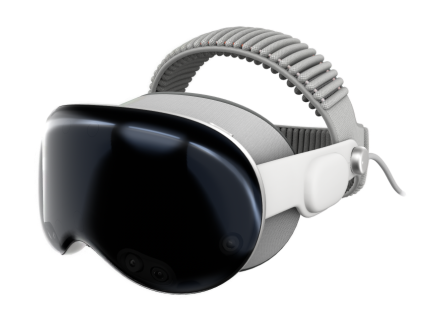
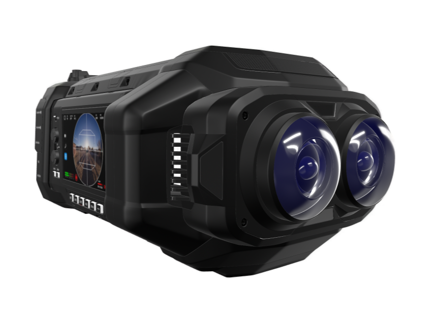
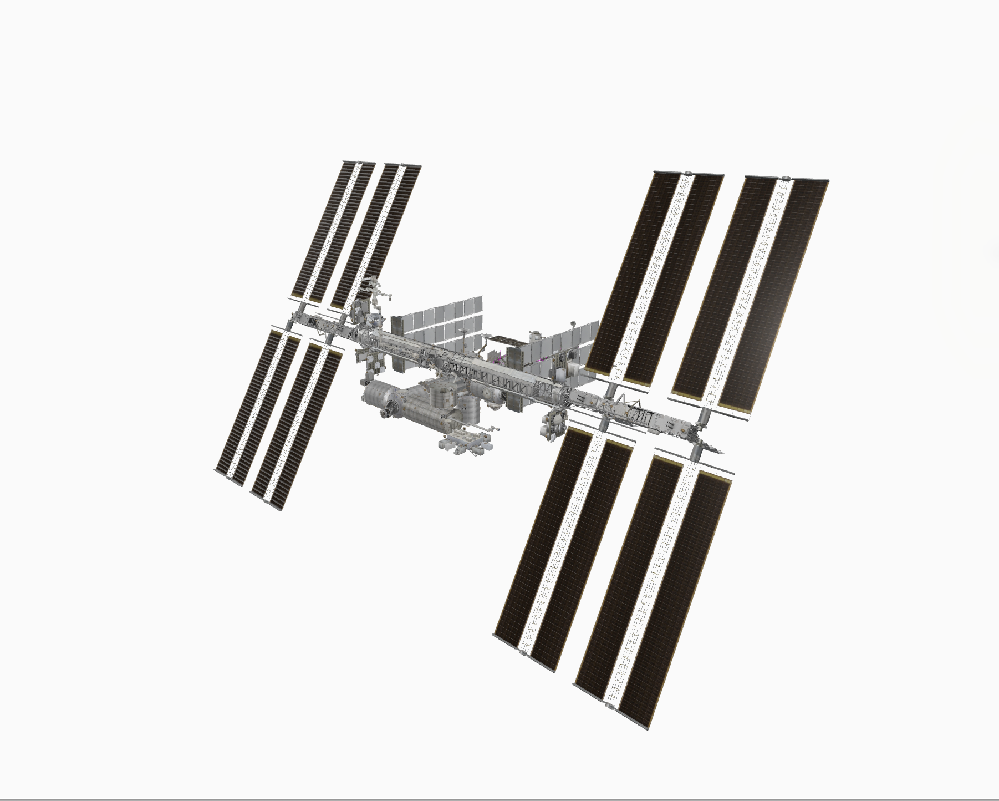
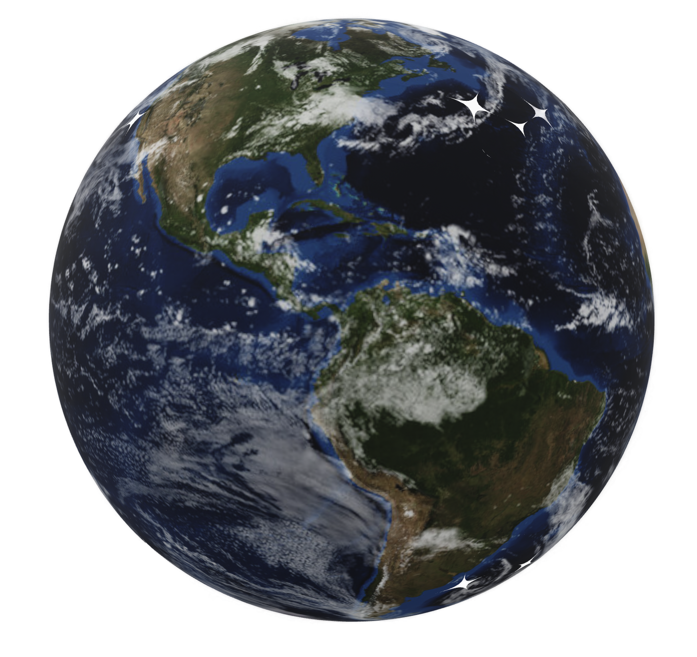

Apple Vision Pro
Explore the Apple Vision Pro headset in full 3D. Examine the front glass, aluminium frame, and dual-knit band at true scale in your space.
View in ARUSDZ · Hosted by Apple · Apple AR Quick Look

Blackmagic URSA Cine Immersive
The world's first cinema camera designed for Apple Immersive Video. Examine the dual 8K lens configuration, camera body, and build quality at true scale.
View in ARUSDZ · 22.1 MB · Apple AR Quick Look

International Space Station
Explore a full 3D model of the International Space Station, including its modular structure and solar array panels, at true scale in your space.
View in ARUSDZ · Credit: NASA Visualization Technology Applications and Development (VTAD) · Source page

Earth with Clouds
A 3D model of Earth with a dynamic cloud layer, letting you view the planet's continents, oceans, and weather patterns at true scale in your space.
View in ARUSDZ · Credit: NASA Visualization Technology Applications and Development (VTAD) · Source page
See more USDZ files at the Quick Look Gallery on the Apple Developer site
Also worth trying on Vision Pro: Untold Engine — an open-source Swift game engine with a CoolWater simulation demo that uses real-world occlusion and lighting. The original WebGL water demo by Evan Wallace may also work directly in Safari on Vision Pro.